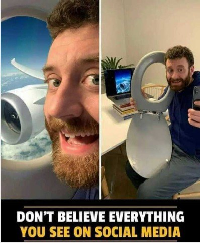
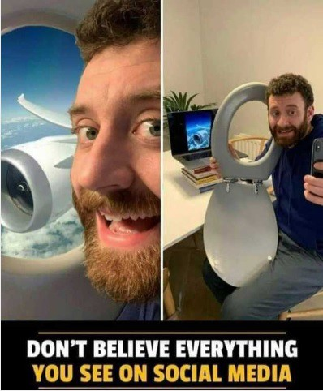
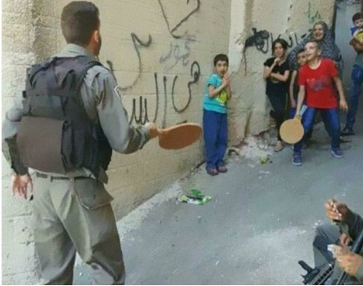
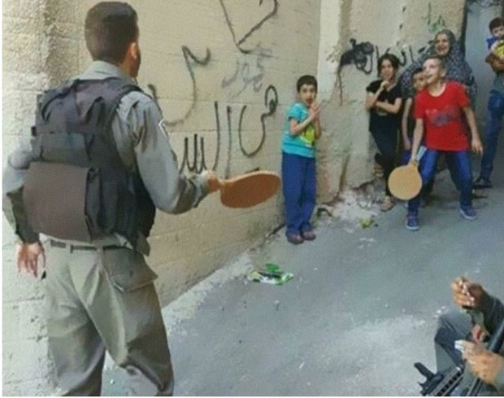
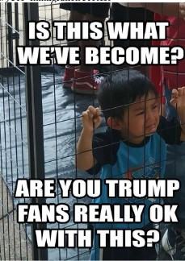
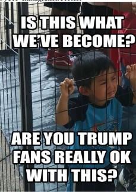

הבניית מציאות
תמונה שווה אלף מילים
חוסר הקשר
זהו ללא ספק הסוג הנפוץ ביותר של מניפולציה בתוכן תקשורתי בה נתקלים חדרי החדשות ברחבי העולם.
התוכן עצמו הוא אמיתי ולא נערך או מפוברק, ולכן הוא לא באמת עבר 'מניפולציה'. עם זאת, הוא מוצג לעיתונאי לצד מידע שאינו מייצג את מה שנראה בתצלום או בוידיאו.

צילום: אדי אדמס. התצלום שלו משנת 1968, תופס ירי מטווח אפס, זיכה אותו בפרס פוליצר ושינה את השיח הציבורי ודעת העולם על מלחמת ויטנאם.
עוצמתו של הרגע המצולם, הפך את גנרל נגווין שלחץ על ההדק, לנבל. התצלום המשיך לרדוף אותו בשארית חייו. בית חולים אוסטרלי סירב לטפל בו, הוא הועבר לטיפול בארה"ב שם קראו לגרש אותו מהמדינה.
זכיתי בפרס פוליצר בשנת 1969 על תמונה של אדם אחד ההורג אדם אחר. שני אנשים מתו בתמונה הזו: האדם שספג את הקליע וגנרל נויין נגוק לואן. הגנרל הרג את הווייטקונג; אני הרגתי את הגנרל במצלמתי. עדיין צילומים הם כלי הנשק החזק ביותר בעולם. אנשים מאמינים בהם; אבל צילומים משקרים, אפילו ללא מניפולציה. הם רק חצאי-אמיתות. מה שהצילום לא אמר היה, 'מה אתה היית עושה לו אתה היית הגנרל באותו זמן באותו מקום באותו יום חם, ואתה לכדת את הבחור הרע לאחר שהוא הרג אחד, שניים או שלושה אזרחים אמריקאים?'
Eulogy, Eddy Adams. Time, July 27, 1998 ]
התמונה שצולמה על ידי אדי אדאמס, שהיה צלם אמריקאי אשר נודע בצילום תמונותיהם של ידוענים ופוליטיקאים. במהלך עבודתו כצלם עיתונות סיקר 13 מלחמות. ב-1 בפברואר 1968, בעת שסיקר את מלחמת וייטנאם עבור סוכנות הידיעות Associated Press בזכותה התפרסם בעולם – תמונתו של מפקד משטרת סייגון מוציא להורג אסיר ביריית אקדח לרקה.
האיש שהוצא להורג הוא נגויין ואן לם, שהיה מפקד כוח וייטקונג שנודע לשמצה בתור "פלוגת הנקמה". באותו היום, הפלוגה רצחה כמה עשרות אזרחים בלתי חמושים וכן קציני משטרה רבים ומשפחותיהם. כשהוא נתפס לבסוף, מוקף גופות של אנשים שהרג, מפקד המשטרה החליט לירות בו באופן בלתי מתוכנן. לאחר ההוצאה להורג, נגוק לואן היורה אמר לעיתונאי שהיה במקום, "האנשים האלה הרגו הרבה מהחברים שלי. אני חושב שבודהה יסלח לי". אדמס הצלם טען מאוחר יותר כי לא ידע את הרקע לאירוע. מכיוון שהרבה אנשים לא הכירו את הקונטקסט של התמונה, היא הפכה את מפקד המשטרה לסמל הרשע בוייטנאם. יותר מאוחר אדמס התנצל בפני נגוק לואן ומשפחתו והתחרט על כך שפרסם את התמונה. "המפקד הרג את הוייטקונג, ואני הרגתי את המפקד עם המצלמה שלי. שני אנשים מתו בתמונה הזאת". לאחר המלחמה נגוק לואן ניסה להגר לאוסטרליה, אך נדחה. הוא היגר לבסוף לארה"ב, שם נתקל בהתנגדות עצומה לבואו וקמפיין הקורא לגירושו מהמדינה. הוא פתח מסעדת פיצה בוושינגטון, אך נאלץ לסגור את המקום לאחר שלא הצליח להישאר אנונימי, והמסעדה ספגה מעשי ונדליזם רבים. הוא מת ב-1998 מסרטן.
אדמס: "הגנרל הרג את המחבל עם אקדח ", "אבל אני הרגתי את הגנרל עם המצלמה ".

הוצאה להורג בסייגון - בנצי גורן
בעידן המודרני, מלחמות אינן מתנהלות רק בשדה הקרב בשטח. אחת הזירות החשובות היום בה מתנהלות המלחמות, היא הזירה התקשורתית...
ב-29 בספטמבר 2000, ערב ראש השנה, נסע גרוסמן, יהודי אמריקאי תושב שיקגו, תלמיד בישיבת בית ישראל בשכונת נווה יעקב הירושלמית, עם שני חברים במונית שעברה דרך השכונה הערבית ואדי אל-ג'וז. תקופה זו הייתה ראשית האינתיפאדה השנייה במהלכה היו עימותים רבים בין מתפרעים פלסטינים לאנשי כוחות הביטחון הישראליים. מספר ערבים הקיפו את המונית, ניפצו את שמשותיה וגררו את גרוסמן ושני חבריו החוצה, בעודם מכים אותם. גרוסמן נדקר ברגלו וסלעים הוטחו בראשו, אך הוא הצליח לנוס אל תחנת דלק סמוכה, ושוטר משמר הגבול ישראלי שהיה סמוך למקום הגן עליו מפני ההמון [1]. חמש שנים לאחר מכן עלה ארצה.
צלמים עצמאיים ששהו בסמוך לאזור צילמו את השוטר מנופף באלה ומגן על גרוסמן, בעוד זה זב דם. התמונה פורסמה לאחר מכן בכלי תקשורת שונים ברחבי העולם עם ביאור מטעה, לפיו גרוסמן הפצוע הוא פלסטיני. בחלק מהמקרים אף נטען כי האירוע המתועד בתצלום התרחש בהר הבית.
אביו של גרוסמן, ששהה בארצות הברית, זיהה את בנו בתצלום ומיהר לשלוח מכתב בדרישה לתיקון לניו יורק טיימס. העיתון פרסם התנצלות ותיקון כי מדובר ב"סטודנט אמריקאי בישראל, ולא בפלסטיני לא-מזוהה" והמיקום תוקן לעיר העתיקה. שלושה ימים לאחר מכן פורסם מאמר מפורט, שבו הוסבר כי גרוסמן הוא יהודי שנפצע בהתפרעות פלסטינים וכי השוטר ניסה לגונן עליו, וכן תוארו הנסיבות שגרמו לפרסום השגוי. באתר האינטרנט של "ניו יורק טיימס" הוצמדו הודעות על הטעות גם לידיעה המקורית, שבה הופיעה התמונה השגויה.


האם תמונה יכולה לספר "סיפור שלם" ? את כל מה שקרה במציאות ?
צילום משקף רק רגע אחד מתוך רצף אירועים. הוא ממסגר את המציאות מנקודת מבט מסוימת, ומשמיט את מה שקרה לפני ואחרי, ואת מה שנמצא מחוץ לפריים.
 


 

 
